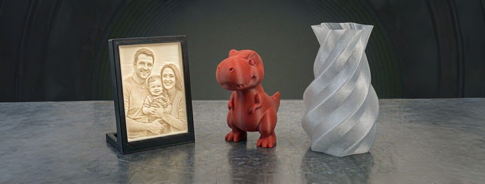

DOMÁCNOST & HOBBY
Originální díly pro nadšence i jednotlivce.
Kryt k ovladači, díl do motorového prostoru nebo cokoliv, co nikde nekoupíte — navrhneme a vytiskneme na míru.

Co řešíme
- Chybějící součástky k domácím spotřebičům nebo ulomené díly k veteránům
- Atypické držáky do auta, organizéry do dílny a specifické krytky na míru
- Výrobu originálních dárků, rodinných erbů, jmenovek nebo filmových maket
- Digitální archivaci rodinných cenností, starých sošek nebo 3D skenování osob
Proč 3D Kastl Studio
- Naskenuji i poškozené torzo, v počítači ho domodeluji a vytisknu nový, plně funkční kus
- Navrhnu a spočítám plastové doplňky přesně podle vašich představ a reálných rozměrů
- Pomohu vám zrealizovat jakýkoliv kreativní nápad od digitálního návrhu až po hotový model
- Bezpečně a rychle přenesu vás nebo váš oblíbený předmět do digitálního 3D světa
POSTUP
Od nápadu k hotovému dílu
Máte doma rozbitý spotřebič, sháníte nesehnatelný díl na kutilský projekt, nebo máte v hlavě originální nápad na dárek? Spojením přesného 3D skenování a 3D tisku dokážu vaše představy proměnit v reálné, hmatatelné předměty. Nemusíte mít žádné technické výkresy ani složité plány — o vše se postarám.
Co všechno pro vás mohu udělat?
- Repliky rozbitých a chybějících věcí: Naskenuji prasklý nebo opotřebovaný plastový díl (třeba k domácímu spotřebiči, nářadí nebo veteránu), v počítači ho opravím a vytisknu nový, plně funkční kus.
- Vychytávky na míru: Navrhnu a vyrobím specifické držáky na telefon do auta, organizéry do dílny, atypické krytky nebo krabičky přesně podle vašich rozměrů.
- Kreativní a dárkové předměty: Pomohu vám zrealizovat filmové makety, rodinné erby, jmenovky, dekorace nebo jakékoliv jiné personalizované dárky.
- 3D skenování osob a cenností: Bezpečně přenesu do digitálního 3D světa starou rodinnou sošku pro její digitální zachování, nebo naskenuji vás pro tvorbu unikátní osobní miniatury.
Jak to probíhá?
- Zadání nebo skenování: Předáte mi poškozený díl k naskenování a vyrobení zástupného modelu, nebo mi jednoduše popíšete svůj nápad a dodáte základní rozměry.
- Digitální návrh (CAD): V počítači model upravím, opravím poškozená místa nebo navrhnu úplně nový design od nuly. Před samotnou výrobou vám návrh ukážu ke schválení.
- Samotný 3D tisk: Podle toho, k čemu bude věc sloužit, vybereme vhodný materiál — estetický plast pro dekorace, nebo naopak vysoce odolný technický plast pro namáhané kutilské součástky.
Máte v hlavě nápad nebo doma rozbitou věc, kterou chcete znovu oživit? Ozvěte se — společně vymyslíme nejlepší a nejrychlejší řešení.
Konzultace
Probereme váš nápad, případně oskenujeme vzor nebo místo, kam má díl pasovat.
Návrh modelu
Vytvoříme 3D model a navrhneme vhodný materiál podle účelu použití.
Zkušební tisk
U složitějších dílů vytiskneme zkušební kus k ověření tvaru a usazení.
Finální výroba
Vytiskneme finální verzi, případně v malé sérii, pokud potřebujete víc kusů.
Ceník — Domácnost & Hobby
| Materiálová skupina | Cena | Poznámka |
|---|---|---|
| Vlastní model — standardní plast (PETG) | 50 Kč / hod tisku | Strojový čas + materiál PETG v ceně. |
| Vlastní model — odolný plast (PCTG, PA) | 80 Kč / hod tisku | Příplatek za technický plast. |
| Co potřebujete | Cena | Poznámka |
|---|---|---|
| Rozbitý / chybějící díl (sken + CAD + tisk) | od 800 Kč / kus | Kompletní balíček — cena dle složitosti dílu. |
| Návrh na míru — jednoduchý tvar | 300–600 Kč / kus | Design od nuly + tisk (do 1 hod práce). |
| Návrh na míru — složitější díl | 600–1 500 Kč / kus | Design od nuly + tisk (1–3 hod práce). |
| 3D sken osoby / postavy | 580 Kč | Skenování + vyčištění dat. Tisk figurky účtován zvlášť. |
| Způsob | Cena | Poznámka |
|---|---|---|
| Osobní předání (Klášterec n. O. / Chomutov) | ZDARMA | Po dohodě na studiu nebo v Chomutově. |
| Zásilkovna | 120 Kč | Bezpečné zabalení + odeslání na zvolenou pobočku. |
Ceny jsou orientační — závisí na složitosti a spotřebě materiálu. Pošlete mi popis nebo fotku a připravím přesnou cenovou nabídku. Jak vzniká cena?
Máte nápad, který nikde nekoupíte?
Napište nám popis nebo fotku — řekneme vám, jak by se dal vyrobit.
Kontaktovat 3D Kastl Studio